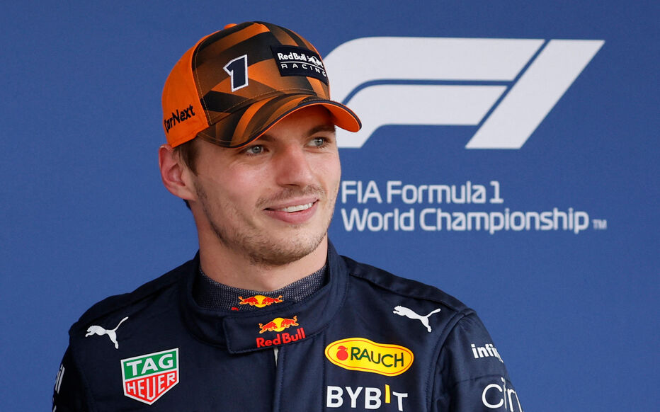

Max Verstappen

Max Emilian Verstappen ( born 30 September 1997) is a Belgian and Dutch racing driver competing in Formula One, where he is the 2021, 2022, and 2023 World Champion. He races under the Dutch flag in Formula One for Red Bull Racing.
Verstappen is the son of former Formula One driver Jos Verstappen, and former go-kart racer Sophie Kumpen. He had a successful run in karting and single-seater categories – including FIA European Formula 3 – breaking several records.
Career
- 2015–Present Red Bull
Major trophies
- 3 Championships 2021-2023
- Best Driver Espy award 2023